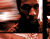

|
|
 |
|
| |
A R T I S T S
|
in alphabetical order TITONTON DUVANTE this longtime ele_mental has appeared under his own name on TRACE ELEMENTS 1 and 2, and in collaboration with MORGAN GEIST on TRACE ELEMENTS 3. his unique music is a hybrid of melodic techno with very impatient drum programming, deriving partially from the styles of DAN CURTIN, MORGAN GEIST, and NU-ERA but forging into areas quite his own.  KEVIN GINGER a sculptor by trade, kevin has appeared as VALENCE on TRACE ELEMENTS 4 and is soon to release his own solo EP for the corporation. highly influenced by the M_NUS, CHAIN REACTION, and BCP schools of experimental minimal techno, kevin brings a heavier thump into his music as he explores the sculptural qualities of sound itself. KEVIN KENNEDY originating from columbus' hip-hop scene, kevin kennedy eventually moved on to join with the ele_mentals and produce techno under various guises such as POWERHOUSE, THE SLEEP ENGINEER, and FBK. his only contribution to the corporation thus far is a powerful techno track for TRACE ELEMENTS 2 (as POWERHOUSE), but we hope kevin can get some more tracks ready for a forthcoming EP, coz his shit is phat. KEVIN KRAHEL this co-founder of ele_mental has DJ'd under the name .PLACEBO. since mid-1993, and finally made his first appearance on vinyl with a track on TRACE ELEMENTS 4. taking a cue from kalamazoo-style techno, uniquely situated as it is between chicago and detroit, kevin's own music brings the experimentation of banging detroit techno together with the funky dance mentality of chicago trax.  CHARLES NOEL founder of the 21/22 corporation in 1992 (and later co-founder of ele_mental), charles began his musical explorations by creating experimental soundscapes equal parts hip-hop, noise, and industrial dance. a long foray into experimental drum'n'bass, influenced by the beat-manglings of REINFORCED (among others), resulted in the corporation's first vinyl releases: the "reconnaissance" EP (as MONOCHROME) and the "fuzzy logic?!" EP (as FUZZY LOGIC?!). charles has most recently moved into the realm of experimental hard techno, and has appeared as Cr02 on TRACE ELEMENTS 1, and as THE ARCHETYPE on TRACE ELEMENTS 2, 3, and 4, plus the "time dilation effect" EP, and the forthcoming "destroy all meaning" EP. TODD SINES another co-founder of ele_mental, todd sines began his musical career seeking to combine the best of bleepy techno with experimental ambient/industrial music and minimalist graphic design. along with charles noel, he formed A.MBIENCE R.ECOVERY S.YSTEM, which became one of the corporations most interesting early projects (although most of A.R.S.'s music remains unreleased). since that time, todd's contributions to the corporation have incuded artwork and music for the TRACE ELEMENTS 1 EP (as ENHANCED) and the solo techno/electro concept EP called "scalable architectures" (as CRON). |
 © 21/22 corp, all rights reserved. RESPECT, YO |
part of the ele_mental group |